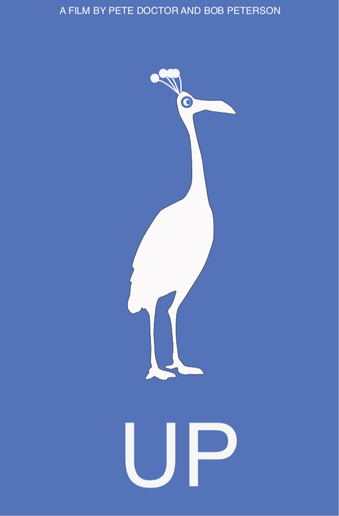

Bruno Ribeiro | Cal Poly | Summer 2019 | GRC 377: Web and Print Publishing
Minimalist movie poster
Use Adobe Illustrator to create a poster, with the following criteria:
24 × 36 inches (w × h)
No rasterize pictures (only vectors)
You will have to create a minimalist poster for a movie of your choice. You will only have two pieces of information on the poster:
The title
“A film by _” (Include the name of the director. Don't include the quotation marks)
Use only Helvetica for the type.
Evaluation
Submit a PDF file to PolyLearn.
Examples

Danielle Hartman, winter 2011, Ohio State

Aaron Powers, winter 2011, Ohio State

Yifeng Yuan, winter 2011, Ohio State

Morgan Perry, spring 2011, Ohio State

Jason Thompson, spring 2011, Ohio State

Kerri Peck, spring 2011, Ohio State